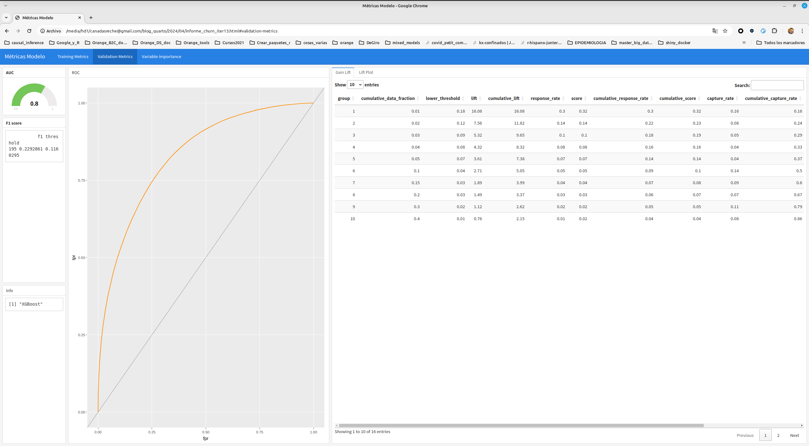

#> ---
#> title: Métricas modelo Churn
#> author: Squad B2C
#> format:
#> dashboard:
#> orientation: columns
#> theme: yeti
#> params:
#> fichero_json:
#> value: x
#> ---
#>
#>
#> ```{r setup, include=FALSE}
#> library(flexdashboard)
#> library(jsonlite)
#> library(tidyverse)
#> ```
#>
#>
#> ```{r load_data}
#> ## '/home/jose/canadasreche@gmail.com/h2o_production/epa_glm/experimental/modelDetails.json'
#> ## '/home/jose/canadasreche@gmail.com/h2o_production/xgboost_model_target_jazztel_20191120_stable/experimental/modelDetails.json'
#> df <- fromJSON(params$fichero_json)
#> # df <- fromJSON("churn_iter13mojo/experimental/modelDetails.json")
#>
#> metricas_training <- df$output$training_metrics$thresholds_and_metric_scores$data %>% t() %>% as.data.frame()
#>
#>
#> if(!is.null(df$output$validation_metrics)){
#> metricas_validation <- df$output$validation_metrics$thresholds_and_metric_scores$data %>% t() %>% as.data.frame()
#> colnames(metricas_validation) <- df$output$validation_metrics$thresholds_and_metric_scores$columns$name
#>
#> }
#>
#>
#> colnames(metricas_training) <- df$output$training_metrics$thresholds_and_metric_scores$columns$name
#>
#>
#> colnames(metricas_training) <- df$output$training_metrics$thresholds_and_metric_scores$columns$name
#>
#> ```
#>
#> # Training Metrics
#>
#> ## Column {width=10%}
#>
#> ### Row 1
#>
#>
#> ```{r}
#> #| title: AUC
#> gauge(df$output$training_metrics$AUC, min = 0.5, max=1, abbreviateDecimals = 2)
#> ```
#>
#> ### Row 2
#>
#> ```{r}
#> #| component: valuebox
#> #| title: F1
#> list(
#> icon = "stopwatch",
#> color = "primary",
#> value = round(metricas_training[which.max(metricas_training$f1), c("f1")], 2)
#> )
#> ```
#>
#>
#> ## Column {width=40%}
#>
#>
#> ### ROC
#>
#> ```{r}
#> plotly::ggplotly(ggplot(metricas_training, aes(x = fpr, y = tpr)) +
#> geom_line(color="darkorange") + geom_abline(intercept = 0, slope = 1, size = rel(0.1)))
#> ```
#>
#>
#> ## Column {width=50%}
#>
#> ::: {.panel-tabset}
#>
#> ### Gain Lift
#>
#> ```{r}
#> t_gain_lift_data <- as.data.frame(t(df$output$training_metrics$gains_lift_table$data))
#> colnames(t_gain_lift_data) <- df$output$training_metrics$gains_lift_table$columns$name
#>
#> t_gain_lift_data[,] <- sapply(t_gain_lift_data[,], function(x) as.numeric(as.character(x)))
#>
#> DT::datatable(round(t_gain_lift_data,2), rownames = FALSE)
#> ```
#>
#>
#> ### Lift Plot
#> ```{r}
#> ggplot(t_gain_lift_data, aes(x=cumulative_data_fraction, y = lift)) +
#> geom_line(color="darkorange")
#> ```
#>
#> :::
#>
#> # Validation Metrics
#> ## Column {width=10%}
#>
#> ### Row 1
#>
#>
#> ```{r}
#> #| title: AUC
#> gauge(df$output$validation_metrics$AUC, min = 0.5, max=1, abbreviateDecimals = 2)
#> ```
#>
#> ### Row 2
#>
#> ```{r}
#> #| component: valuebox
#> #| title: F1
#> list(
#> icon = "stopwatch",
#> color = "primary",
#> value = round(metricas_validation[which.max(metricas_validation$f1), c("f1")], 2)
#> )
#> ```
#>
#>
#> ## Column {width=40%}
#>
#>
#> ### ROC
#>
#> ```{r}
#> plotly::ggplotly(ggplot(metricas_validation, aes(x = fpr, y = tpr)) +
#> geom_line(color="darkorange") + geom_abline(intercept = 0, slope = 1, size = rel(0.1)))
#> ```
#>
#>
#> ## Column {width=50%}
#>
#> ::: {.panel-tabset}
#>
#> ### Gain Lift
#>
#> ```{r}
#> t_gain_lift_data <- as.data.frame(t(df$output$validation_metrics$gains_lift_table$data))
#> colnames(t_gain_lift_data) <- df$output$validation_metrics$gains_lift_table$columns$name
#>
#> t_gain_lift_data[,] <- sapply(t_gain_lift_data[,], function(x) as.numeric(as.character(x)))
#>
#> DT::datatable(round(t_gain_lift_data,2), rownames = FALSE)
#> ```
#>
#>
#> ### Lift Plot
#> ```{r}
#> ggplot(t_gain_lift_data, aes(x=cumulative_data_fraction, y = lift)) +
#> geom_line(color="darkorange")
#> ```
#>
#> :::
#>
#>
#> # Variable importance
#>
#> ## Column
#>
#>
#> ### **Variable Importance**
#>
#> ```{r}
#> var_importance <- df$output$variable_importances$data %>% t() %>% as.data.frame()
#> colnames(var_importance) <- c("variable", "importance","rel_importance", "otra")
#> var_importance <- var_importance %>%
#> transmute(
#> variable = variable,
#> importance = importance %>% as.character() %>% as.numeric,
#> rel_importance = rel_importance%>% as.character() %>% as.numeric)
#> # var_importance$variable <- as.character(var_importance$variable)
#>
#> p <- var_importance %>%
#> mutate(variable = fct_reorder(variable, rel_importance)) %>%
#> top_n(25, rel_importance) %>%
#> ggplot(
#> aes(
#> x = variable,
#> y = rel_importance
#> )) +
#> geom_col(fill = "darkorange") +
#> coord_flip()
#>
#> plotly::ggplotly(p)
#>
#> write_csv(var_importance, file = "variables_importantes.csv")
#>
#>
#> ```Métricas modelo con quarto y h2o
2024
quarto
h2o
Listening
Como muchos sabréis soy bastante fan de usar h2o en modelización. H2O se integra muy bien con R, Python o con Spark. De hecho , gracias a mi insistencia y conocimiento de como usar esta librería he conseguido cambiar la forma de hacer las cosas en más de una empresa, -si, no tengo abuela, pero ya va siendo hora de contar las cosas como han sido-.
Una vez tienes entrenado un modelo con h2o se puede guardar como un MOJO (Model Object Java Optimization), y este mojo lo puedes usar para predecir usando R, python, java o spark, y es muy fácil de productivizar.
En el fichero mojo (una vez lo descomprimes) aparte del modelo también se crea un fichero json en la ruta experimental/modelDetails.json dónde se guarda información sobre el modelo utilizado, métricas de desempeño en train y validación, y un montón de cosas.
Pues parseando ese fichero y tratándolo podemos crearnos un dashboard.
Yo me he creado un fichero quarto que toma como parámetro ese fichero json y genera un dashboard.
Fichero qmd
Al bajar, renombrar quitando el _txt
El contenido es.
Script para generar el dashboard
Tengo un script en R , pero podría ser en bash que descomprime el modelo (fichero mojo) en una carpeta temporal y llama al fichero qmd para generar el dashboard
Descargar generar_metricas_quarto.R
#> #!/usr/bin/env Rscript
#> args = commandArgs(trailingOnly=TRUE)
#>
#> zipfile = args[1]
#> output_path = paste0(args[2],'.html')
#>
#> fichero_qmd <- 'metricas.qmd'
#>
#>
#> # Generar informe automático
#>
#> tmp_dir <- tempdir()
#> tmp <- tempfile()
#>
#> unzip(zipfile = zipfile, exdir = tmp_dir )
#>
#> fichero_json = paste0(tmp_dir, "/experimental/modelDetails.json")
#>
#>
#> quarto::quarto_render(
#> input = fichero_qmd,
#> execute_params = list(fichero_json = fichero_json),
#> output_file = output_path
#>
#> )Y ya sólo quedaría ejecutar esto
Rscript --vanilla generar_metricas_quarto.R modelo_mojo.zip output_fileEntrenar un modelo de ejemplo
Tengo unos datos bajados de kaggle
Entrenamos el modelo con h2o y guardamos el mojo
Show the code
library(tidyverse)
library(h2o)
h2o.init()
#>
#> H2O is not running yet, starting it now...
#>
#> Note: In case of errors look at the following log files:
#> /tmp/RtmpS53sS0/file12a8945751e62/h2o_jose_started_from_r.out
#> /tmp/RtmpS53sS0/file12a896410f5d6/h2o_jose_started_from_r.err
#>
#>
#> Starting H2O JVM and connecting: ...... Connection successful!
#>
#> R is connected to the H2O cluster:
#> H2O cluster uptime: 4 seconds 336 milliseconds
#> H2O cluster timezone: Europe/Madrid
#> H2O data parsing timezone: UTC
#> H2O cluster version: 3.44.0.3
#> H2O cluster version age: 3 months and 30 days
#> H2O cluster name: H2O_started_from_R_jose_ggn477
#> H2O cluster total nodes: 1
#> H2O cluster total memory: 7.80 GB
#> H2O cluster total cores: 12
#> H2O cluster allowed cores: 12
#> H2O cluster healthy: TRUE
#> H2O Connection ip: localhost
#> H2O Connection port: 54321
#> H2O Connection proxy: NA
#> H2O Internal Security: FALSE
#> R Version: R version 4.3.3 (2024-02-29)
# Load data
churn_df <- read_csv("./WA_Fn-UseC_-Telco-Customer-Churn.csv")
# Split data
churn_hex <- as.h2o(churn_df)
#>
|
| | 0%
|
|======================================================================| 100%
churn_hex$Churn <- as.factor(churn_hex$Churn)
splits <- h2o.splitFrame(data = churn_hex, ratios = 0.8, seed = 1234)
train <- h2o.assign(splits[[1]], "train")
test <- h2o.assign(splits[[2]], "test")
# Train model
x <- colnames(churn_hex)[!colnames(churn_hex) %in% c("customerID", "Churn")]
x
#> [1] "gender" "SeniorCitizen" "Partner" "Dependents"
#> [5] "tenure" "PhoneService" "MultipleLines" "InternetService"
#> [9] "OnlineSecurity" "OnlineBackup" "DeviceProtection" "TechSupport"
#> [13] "StreamingTV" "StreamingMovies" "Contract" "PaperlessBilling"
#> [17] "PaymentMethod" "MonthlyCharges" "TotalCharges"
y <- "Churn"
y
#> [1] "Churn"
model <- h2o.xgboost(
model_id = "Churn_model",
x = x,
y = y,
training_frame = train,
validation_frame = test,
distribution = "bernoulli",
nthread = -1,
ntrees = 20,
max_depth = 3,
)
#>
|
| | 0%
|
|==== | 5%
|
|=============================================================== | 90%
|
|======================================================================| 100%
h2o.save_mojo(model, path = ".", force = TRUE)
#> [1] "/media/hd1/canadasreche@gmail.com/blog_quarto/2024/04/Churn_model.zip"
h2o.shutdown(prompt = FALSE)Y ejecutando en la misma carpeta dónde están el modelo y el fichero qmd.
Evidentemente hay que tener instalado quarto y demás cosas.
Comando que hay que ejecutar en consola
Rscript --vanilla generar_metricas_quarto.R Churn_model.zip Churn_model_metricsInforme
Y nos genera este bonito informe (descomrpimir el zip)

Y esto es todo, de esta forma es como yo en mi día a día guardo un pequeño dashboard de cada modelo, simplemente leyendo la info que h2o ha guardado en el mojo y así estoy seguro de que esas métricas son justo las que corresponden con los datos usados por el modelo.